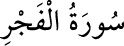

<a name=10647></a><br/>
<b>89- el-FECR SÛRESİ</b><br/>
<i><b>Fecr, tan yerinin ağarması ve şafak mânâsına gelir. Fecr sûresi, Leyl sûresinden</b></i><br/>
<i><b>sonra Mekke’de inmiştir, 30 âyettir.</b></i><br/>
